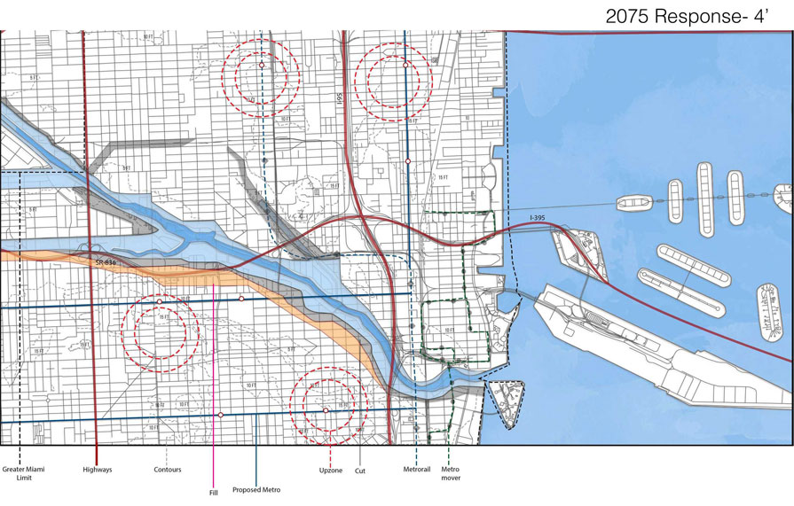

Urban Analysis
From the research findings acquired during seminar we then moved to Miami to select and analyze the selected area. From this I created a series of mapping at an urban scale showing what areas are at high risk.
Rethinking The Urban Scale
A series of urban plans were created to show change over time on how to create a strategic retreat for the city. This process i went through was to understand the types of infrastructure, land use, zoning that would widely be affected close to the water edge. I then decided it was best to cease development on low lying areas and move it to higher elevated areas to create denser communities.
(Re)defining the edge would create a strategic retreat in areas of the city that are most affected by the sea level rise. Those buildings that are costliest to maintain within the plan would receive incentives provided by the city.
- 
-